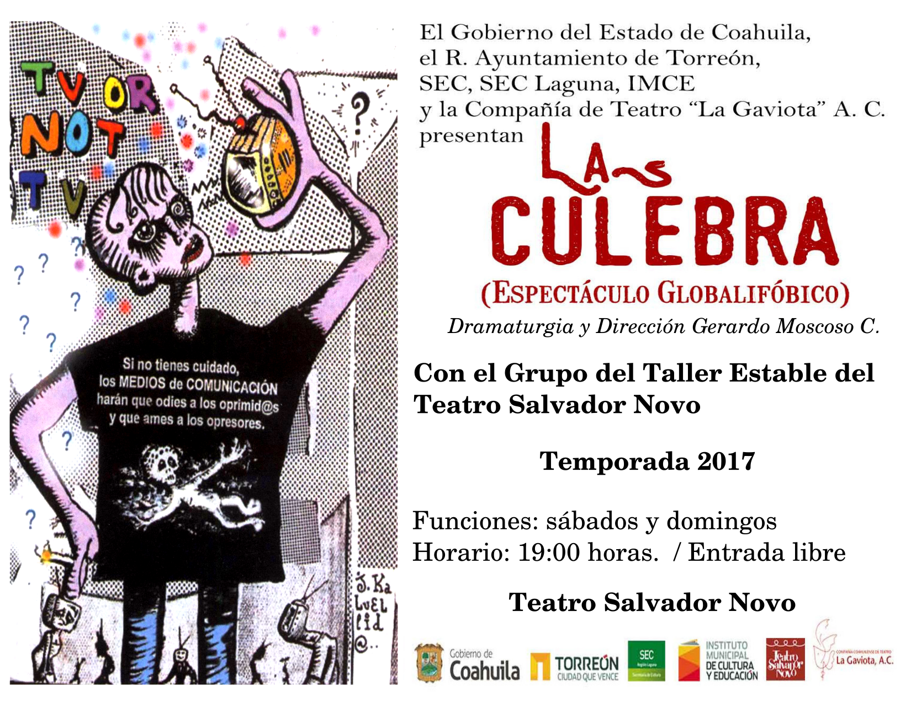

El Día Mundial del Teatro fue creado en 1961 por el Instituto Internacional del Teatro (ITI). Se celebra anualmente el 27 de marzo por los Centros ITI y la comunidad teatral internacional. Varios eventos teatrales nacionales e internacionales son organizados para conmemorar esta ocasión. La característica más importante es la lectura del Mensaje Internacional del Día Mundial del Teatro a través del cual, por invitación del ITI, una figura de talla mundial comparte sus reflexiones sobre el tema del Teatro y una Cultura de Paz. El primer Mensaje Internacional del Día Mundial del Teatro fue escrito por Jean Cocteau (Francia) en 1962.
Desde entonces, cada año el 27 de marzo, el Día Mundial del Teatro se celebra en muchas y variadas formas por los Centros Nacionales del ITI de los cuales en la actualidad hay casi 100 en todo el mundo. Cada año, una figura sobresaliente en el teatro o una persona excepcional en corazón y espíritu de otro campo, es invitada a compartir sus reflexiones sobre el teatro y la armonía internacional. Lo que se conoce como el Mensaje Internacional se traduce en más de 20 idiomas, leído por decenas de miles de espectadores antes de las presentaciones en teatros de todo el mundo.
En años anteriores hemos celebrado el Día Mundial del Teatro con la puesta en escena “El viaje de los cantores” en el Teatro Nazas (2010) y en el Teatro Salvador Novo (2011, 2012, 2013, 2014, 2015 y 2016).

El lunes 27 de marzo del 2017, a las 19:00 horas, en el Teatro Salvador Novo (C. Galeana y prolongación Colón, en Torreón), celebraremos el día Mundial del Teatro con la puesta en escena “La Culebra (Espectáculo Globalifóbico)” dramaturgia y dirección de Gerardo Moscoso C. donde verán a un servidor como asistente de Dirección y a 20 actores en escena.
El Mensaje con motivo del Día Internacional del Teatro de este año, 2017, es redactado por Isabelle Huppert. El mensaje es el siguiente:
Y aquí estamos una vez más. Reunidos de nuevo en primavera, 55 años desde nuestra reunión inaugural, para celebrar el Día Mundial del Teatro. Sólo un día, 24 horas, dedicado a celebrar el teatro en todo el mundo. En este día de celebración podemos transportarnos a Japón experimentando el teatro Noh y Bunraku, trazar una línea desde aquí hasta expresiones tan diversas como la Ópera de Pekín y Kathakali; el escenario nos permite balancearnos entre Grecia y Escandinavia mientras nos envolvemos en Esquilo e Ibsen, Sófocles y Strindberg; Nos permite revolotear entre Gran Bretaña e Italia tal como reverberamos entre Sarah Kane y Pirandello. Y también París, que a pesar de todo es la ciudad que atrae a la mayor cantidad de compañías extranjeras de teatro. Entonces, nuestras 24 horas nos llevan de Francia a Rusia, de Racine y Moliere a Chejov, después de atravesar el atlántico para terminar en un campus californiano donde los jóvenes, quizá, están reinventando el teatro.
Es así como se mantiene vivo. El teatro tiene una vida abundante que desafía el espacio y el tiempo; las piezas más contemporáneas se nutren de los siglos pasados, los repertorios más antiguos se hacen modernos cada vez que son montados de nuevo.
El Día Mundial del Teatro, obviamente no es un día ordinario para ser agrupado en la procesión de otros días. Nos garantiza el acceso a una inmensa continuidad de espacio-tiempo a través de la majestuosidad pura del canon global. Y para evocar el espacio-tiempo, cito a un dramaturgo francés tan brillante como discreto, Jean Tardieu:
Para el espacio Tardieu decía que se debe preguntar “¿Cuál es el camino mas largo de un lugar a otro?”… Para el tiempo, él sugería medir “En décimas de segundo, el tiempo que te toma pronunciar la palabra eternidad”… Para el espacio-tiempo, él decía: “Antes de dormir fija tu mente entre dos puntos del espacio, y calcula el tiempo que tardas, en sueños, para ir de uno al otro”.
Es la palabra sueño la que retengo. Uno diría que Jean Tardieu y Bob Wilson se conocieron. Podríamos también sintetizar nuestro día mundial del teatro en el recuerdo de Samuel Beckett, quien, en su estilo diligente, dijo a través de Winnie: “Oh, qué hermoso día ha sido”.
Al pensar en este mensaje, que me honra haber sido solicitada para escribir, me acuerdo de todos los sueños de todas las escenas. Así mismo, es justo decir que no llegué aquí sola; cada personaje que he interpretado esta aquí conmigo, roles que parecen irse cuando la cortina cae, pero han cavado una vida bajo tierra dentro de mi, esperando para ayudar o destruir los roles que le sigan: Fedra, Amarinta, Orlando, Hedda Gabbler, Medea, Mertewill, Blanche Dubois…
Me acompañan también todos los personajes que amo y aplaudo como espectadora. Y entonces pertenezco al mundo entero. Soy griega, africana, siria, vietnamita, rusa, brasileña, persa, romana, japonesa, marsellesa, neoyorquina, filipina, argentina, noruega, coreana, alemana, austriaca, inglesa. Pues es aquí, en el escenario y en el teatro, que encontramos la verdadera globalización.
Hablando aquí yo no soy yo misma, yo no soy una actriz, soy solo una de las muchas personas gracias a las que el teatro sigue existiendo. Es un poco nuestro deber y nuestra necesidad. Es decir, nosotros no podríamos existir sin el teatro, es más bien gracias a él que nosotros existimos. El teatro es muy fuerte, resiste, sobrevive a todo ;las guerras, la censura, la falta de dinero.
Es suficiente decir que “El escenario es una escena indistinta de una época indeterminada”. Todo lo que se necesita es un actor o una actriz. ¿Qué van a hacer? ¿Qué van a decir? ¿Van a hablar? El público espera y lo sabrá, pues sin el público no hay teatro, nunca olviden esto. Una sola persona es una audiencia. ¡Pero esperemos que no haya muchas sillas vacías! Una obra de Ionesco siempre está llena, y él representa su valor artístico al poner al final de una de sus obras a una mujer vieja diciendo: “Si, si, morimos en plena gloria… morimos para entrar en la leyenda… Por lo menos tenemos nuestra calle…”
El Día Mundial del Teatro ha existido por 55 años ya. En 55 años, yo soy la octava mujer en ser invitada a dar este mensaje, si puede uno llamar a esto un mensaje. Mis predecesores (¡los hombres se imponen!) hablaron del teatro, de la imaginación, de la libertad y originalidad en orden de evocar la belleza, el multiculturalismo y hacer las preguntas sin respuesta. En 2013, hace solo 4 años, Darío Fo dijo: “La única solución a la crisis reside en la esperanza de la gran cacería de brujas contra nosotros, especialmente contra la gente joven que quiere aprender el arte del teatro: Así una nueva diáspora de actores va a emerger, quienes indudablemente atraídos por lo beneficios inimaginables hallarán una nueva representación”. Beneficios inimaginables, suena como una bella fórmula que vale la pena ser incluída en cualquier retorica política ¿No creen?
Me encantaría sugerir que aquellos que aparentemente ansían gobernarnos deberían estar al tanto de los Beneficios inimaginables traídos por el teatro. Pero¡Sin cacería de brujas!
El teatro para mí representa lo otro, es diálogo y es ausencia de odio. Amistad entre las personas, no sé muy bien que significa eso, pero creo en la comunidad, en la amistad entre espectadores y actores, en la larga unión entre la gente que el teatro agrupa. Traductores, educadores, vestuaristas, actores, académicos, practicantes y audiencias. El teatro nos protege, nos abraza… Creo que el teatro nos ama… tanto como lo amamos nosotros.
Recuerdo un director de escena tallado a la antigua para el que trabajé, quien antes de subir el telón cada noche, gritaba con toda firmeza: “Hagan espacio para el teatro”.
Y éstas serán mis últimas palabras esta noche.